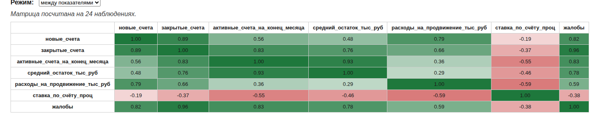
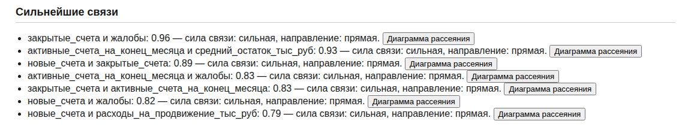
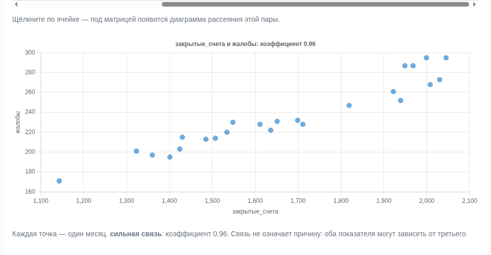
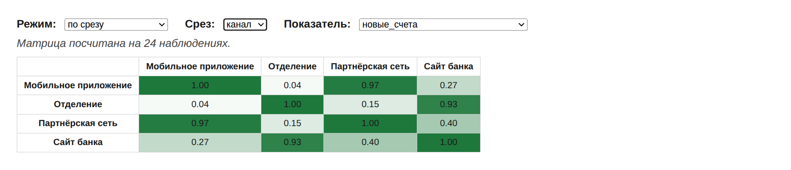
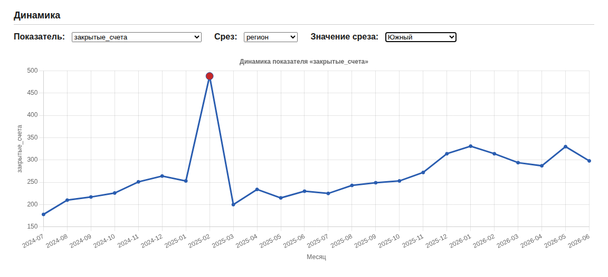
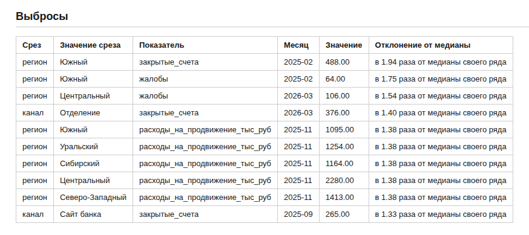

Ассистент получает описание таблицы — не сами данные — и возвращает страницу, которая читает выгрузку прямо в браузере: паспорт данных, матрица корреляций, поиск выбросов. Программировать не нужно; нужно уметь принять чужой результат.
Накопительный счёт растёт по всем каналам — или рост в одном месте оплачивается оттоком в другом?
Выгрузка — помесячные данные по накопительному счёту: savings_monthly.csv, 24 месяца, пять регионов, четыре канала привлечения, 480 строк. Кроме объёмных показателей в ней есть то, с чем их сопоставляют: расходы на продвижение, ставка по счёту и число жалоб. Все материалы кейса — в папке репозитория практики.
Только структура таблицы и словесное описание полей. Строки не передаются: страницу ассистент пишет по описанию, а выгрузку открывает уже ваш браузер — данные остаются на вашей машине.
По одной операции на инструмент — с них начинается домашнее задание. Полный инструмент ниже — продвинутый уровень.
Один запрос — страница с матрицей корреляций по месячным итогам и диаграммой рассеяния по щелчку. Готовый эталон — 3.2.6_инструмент_корреляций.html: можно скачать и сразу загрузить свою выгрузку.
Сделай одностраничный HTML-инструмент: матрица корреляций по банковской выгрузке. Данные: CSV-файл, кодировка UTF-8 с меткой порядка байтов, разделитель — точка с запятой, десятичный знак — запятая. Первая колонка «месяц» в формате ГГГГ-ММ, дальше текстовые колонки-срезы (регион, канал) и числовые показатели. Пример первых строк: месяц;регион;канал;новые_счета;закрытые_счета;активные_счета_на_конец_месяца;средний_остаток_тыс_руб;расходы_на_продвижение_тыс_руб;ставка_по_счёту_проц;жалобы 2024-07;Центральный;Мобильное приложение;620;110;3930;221,1;515;11,49;13 Названия колонок в коде жёстко не прописывай: числовые определи сам (все непустые значения разбираются в число после замены запятой на точку), текстовые пропусти. Что делает страница: 1. Кнопка выбора CSV-файла; данные читаются в браузере и никуда не отправляются. 2. Свёртка по месяцам — это обязательно: в файле на каждый месяц по многу строк (регионы × каналы). Показатели с «средн», «ставка», «проц» или «доля» в названии усредняются, остальные суммируются. Корреляции считать ТОЛЬКО по свёрнутым месячным строкам, иначе они измеряют различия срезов, а не связь показателей. 3. Матрица корреляций Пирсона по всем числовым показателям: таблица, в ячейке коэффициент с двумя знаками, фон — зелёный для положительных, красный для отрицательных, насыщенность пропорциональна модулю. 4. Под матрицей — список трёх самых сильных пар (по модулю, без диагонали) словами: «0,96 — сильная связь: закрытые_счета и жалобы». 5. Клик по ячейке матрицы строит диаграмму рассеяния этой пары: каждая точка — месяц. Требования к коду: — один HTML-файл; графики — Chart.js версии 4 с CDN: <script src="https://cdn.jsdelivr.net/npm/chart.js@4.4.0/dist/chart.umd.js"></script>; настройки — синтаксис четвёртой версии (plugins.title, scales.x/scales.y); — диаграмма рассеяния в контейнере фиксированной высоты, у графика maintainAspectRatio: false; перед перерисовкой предыдущий график уничтожать через destroy(); — месяц в расчётах — строка, в объект даты не превращать; — имена переменных и функций — английские слова латиницей; русский — только в подписях; — async и await не использовать, разбор файла синхронный; — у первого заголовка CSV срезать метку кодировки: replace(/^/, ""); — корреляция Пирсона: по отклонениям от среднего, при нулевом знаменателе вернуть 0. Проверь себя: коэффициенты лежат между −1 и 1; на этой выгрузке закрытые_счета и жалобы дают около 0,96, новые_счета и расходы_на_продвижение — около 0,79. Если получилось 0,3–0,4 — забыта свёртка по месяцам. Ответ — только полный HTML-файл в тройных кавычках, без пояснений.
Один запрос — страница с динамикой показателя по месяцам, линией тренда и подсветкой выбросов; показатель и срез выбираются списками. Готовый эталон — 3.2.7_инструмент_трендов.html.
Сделай одностраничный HTML-инструмент: динамика показателя с линией тренда и подсветкой выбросов. Данные: CSV-файл, кодировка UTF-8 с меткой порядка байтов, разделитель — точка с запятой, десятичный знак — запятая. Первая колонка «месяц» в формате ГГГГ-ММ, дальше текстовые колонки-срезы и числовые показатели. Пример первых строк: месяц;регион;канал;новые_счета;закрытые_счета;активные_счета_на_конец_месяца;средний_остаток_тыс_руб;расходы_на_продвижение_тыс_руб;ставка_по_счёту_проц;жалобы 2024-07;Центральный;Мобильное приложение;620;110;3930;221,1;515;11,49;13 Названия колонок жёстко не прописывай: числовые определи сам, текстовые считай срезами. Что делает страница: 1. Кнопка выбора CSV-файла; данные читаются в браузере и никуда не отправляются. 2. Три выпадающих списка: показатель; срез («вся выгрузка», регион, канал); значение среза. Любое изменение перерисовывает график. 3. Свёртка по месяцам выбранного среза: показатели с «средн», «ставка», «проц» или «доля» в названии усредняются, остальные суммируются. График всегда строится по месячным итогам, не по строкам файла. 4. Линейный график по месяцам плюс прямая линия тренда по всем точкам (метод наименьших квадратов). Под графиком одной строкой: наклон тренда за месяц и изменение за период в процентах. 5. Выбросы: точки вне границ «первый квартиль минус полтора межквартильных размаха … третий квартиль плюс полтора размаха» рисуются красным и крупнее; под графиком — список таких месяцев со значениями. Требования к коду: — один HTML-файл; график — Chart.js версии 4 с CDN: <script src="https://cdn.jsdelivr.net/npm/chart.js@4.4.0/dist/chart.umd.js"></script>; настройки — синтаксис четвёртой версии; ось X категориальная с подписями месяцев (тип time не использовать); — график в контейнере фиксированной высоты, maintainAspectRatio: false; перед перерисовкой предыдущий график уничтожать через destroy(); — месяц в расчётах — строка, в объект даты не превращать; — квантили считать по отсортированной КОПИИ массива: values.slice().sort((a,b)=>a-b); — имена переменных и функций — английские слова латиницей; русский — только в подписях; — async и await не использовать; у первого заголовка CSV срезать метку кодировки. Проверь себя: при выборе показателя «закрытые_счета», среза «регион» и значения «Южный» на этой выгрузке один месяц должен подсветиться как выброс — закрытий в нём в несколько раз больше соседних. Ответ — только полный HTML-файл в тройных кавычках, без пояснений.
Загрузить в любой из двух инструментов выгрузку — свою обезличенную или учебную — и записать один вывод одним предложением. Если генерация у ассистента не задалась, возьмите готовый эталон: цель задания — вывод из данных, а не борьба с моделью.
Один запрос, отправляется целиком. Он длинный, и это осознанно: ниже разобрано, из чего он состоит и почему без каждой части результат ломается предсказуемым образом.
Ты пишешь одностраничный веб-инструмент для разведочного анализа банковских выгрузок. Результат — один HTML-файл, который открывается двойным щелчком и работает без интернета, кроме одной внешней библиотеки для графиков.
## Данные
Инструмент принимает CSV-файл: кодировка UTF-8 с меткой порядка байтов, разделитель — точка с запятой, десятичный разделитель — запятая, первая строка — заголовки на русском.
Пример выгрузки, на которой инструмент должен работать (10 колонок, 480 строк, 24 месяца):
месяц;регион;канал;новые_счета;закрытые_счета;активные_счета_на_конец_месяца;средний_остаток_тыс_руб;расходы_на_продвижение_тыс_руб;ставка_по_счёту_проц;жалобы
2024-07;Центральный;Мобильное приложение;620;110;3930;221,1;515;11,49;13
Состав колонок жёстко не задавать: инструмент определяет его сам. Колонка с месяцем — та, где значения имеют вид ГГГГ-ММ. Колонки, где значения разбираются в число, — показатели. Остальные — срезы (в примере это регион и канал).
## Что должно быть на странице
**1. Паспорт выгрузки.** Число строк, период (первый и последний месяц), список найденных показателей, список срезов с числом значений в каждом. Если в числовой колонке есть пустые значения — предупреждение с названием колонки и числом пропусков.
**2. Матрица корреляций.** Главный блок. Два режима, переключаются списком:
- «между показателями» — квадратная матрица по всем показателям;
- «по срезу» — выбираются срез и один показатель; матрица показывает, как связаны между собой значения этого среза по динамике выбранного показателя. Например, при срезе «канал» и показателе «новые счета» матрица отвечает на вопрос, какие каналы растут и падают вместе.
Оформление матрицы: в ячейке коэффициент с двумя знаками после запятой; фон ячейки тем насыщеннее, чем сильнее связь; положительные и отрицательные связи — разными цветами, около нуля — почти белый. Подсказка при наведении с названиями пары. Щелчок по ячейке строит под матрицей диаграмму рассеяния этой пары.
Над матрицей — строка о том, на скольких наблюдениях она посчитана.
**3. Сильнейшие связи.** Список пар, отсортированный по модулю коэффициента, семь строк. У каждой: коэффициент, названия показателей, сила связи словами (сильная, заметная, умеренная, связи практически нет), направление словами и кнопка, строящая диаграмму рассеяния этой пары.
**4. Диаграмма рассеяния.** Точки — наблюдения, подписи осей — названия показателей, в заголовке коэффициент. Под графиком — одна строка обычными словами: насколько сильна связь и предупреждение, что связь не означает причину, потому что оба показателя могут зависеть от третьего.
**5. Выбросы.** Для каждого среза, каждого его значения и каждого показателя найти месяцы, выпадающие из собственного ряда по правилу межквартильного размаха: значение меньше первого квартиля минус полтора размаха или больше третьего квартиля плюс полтора размаха. Таблица: срез, значение среза, показатель, месяц, значение, во сколько раз отличается от медианы своего ряда. Сортировка по убыванию отклонения, показывать двадцать строк, остальные — по кнопке.
**6. Динамика.** График по месяцам с тремя списками: показатель, срез и значение среза (или «вся выгрузка»). Точки-выбросы на линии выделены другим цветом и большим размером.
## Требования к расчётам
**Агрегация обязательна.** В выгрузке на один месяц приходится столько строк, сколько сочетаний срезов. Все связи и вся динамика считаются на месячных итогах, а не на исходных строках. Если считать корреляцию по исходным строкам, коэффициент измерит различия между срезами, а не связь показателей: крупный регион даёт большие значения сразу во всех колонках, и любые два показателя выглядят связанными.
**Правило свёртки.** Показатели, которые являются долями, ставками, процентами или средними величинами, при свёртке усредняются; остальные суммируются. Определять по названию колонки: если в нём есть «средн», «ставка», «проц» или «доля» — усреднять, иначе суммировать. Иначе средний остаток превратится в сумму средних.
**Корреляция** — коэффициент Пирсона. Пары, где одно из значений пустое, в расчёт не включать. Если знаменатель нулевой, вернуть ноль, а не «не число».
**Выбросы** ищутся внутри ряда конкретного среза и показателя, а не по всей выгрузке: всплеск в одном регионе растворяется в сумме по двадцати строкам месяца.
## Как устроить расчёт
Не изобретай архитектуру: ниже перечислены функции, из которых складывается решение. Напиши их именно так — это избавит от вложенных структур, в которых легко потеряться.
Разбор файла и определение типов — место, где ошибаются чаще всего, поэтому вот готовый код, возьми его как есть:
```
function num(value) {
if (value === undefined || value === null) return NaN;
return parseFloat(String(value).trim().replace(/\s/g, '').replace(',', '.'));
}
function parseCSV(text) {
const lines = text.replace(/^\uFEFF/, '').split(/\r?\n/).filter(l => l.trim());
const headers = lines.shift().split(';').map(h => h.trim());
return lines.map(line => {
const parts = line.split(';');
const row = {};
headers.forEach((h, i) => { row[h] = (parts[i] || '').trim(); });
return row; // все значения — строки, числами занимается num()
});
}
function detectTypes(rows) {
const types = {};
Object.keys(rows[0]).forEach(col => {
const sample = rows.slice(0, 50).map(r => r[col]).filter(v => v !== '');
if (sample.every(v => /^\d{4}-\d{2}$/.test(v))) types[col] = 'month';
else if (sample.every(v => !isNaN(num(v)))) types[col] = 'metric';
else types[col] = 'slice';
});
return types;
}
```
Везде дальше числовое значение получай через `num(row[col])`, а не через прямое обращение: в объектах лежат строки.
Все имена функций и переменных в коде — латиницей, как в примере выше. Русский язык только в том, что видит пользователь: заголовки, подписи, сообщения.
Имя функции не используй повторно как имя переменной: `const buildMatrix = ...` рядом с `function buildMatrix()` ломает страницу целиком. Каждое имя объявляется в файле ровно один раз.
Остальные функции напиши сам по этим описаниям:
```
aggregateMonths(rows, types, sliceCol) -> массив объектов
sliceCol необязателен; без него ключ группировки — только месяц,
с ним — строка «месяц + значение среза»
в каждой группе показатели с «средн», «ставка», «проц» или «доля»
в названии усредняются, остальные суммируются
результат: [{month: '2024-07', slice: '...', 'новые_счета': 5200, ...}, ...]
месяц в результате — строка
corr(x, y) -> число
коэффициент Пирсона по двум массивам чисел одинаковой длины;
пары, где хотя бы одно значение NaN, пропускаются;
при нулевом знаменателе вернуть 0
buildMatrix(rows, cols) -> двумерный массив
corr каждой колонки с каждой; значения берутся как rows[i][col]
buildPivot(rows, types, sliceCol, metric) -> {rows, cols}
cols — уникальные значения среза, отсортированные
rows — по одной записи на месяц: {month, 'Отделение': 4500, 'Сайт банка': 900, ...}
quantile(values, p) -> число
сортировать копию: [...values].sort((a, b) => a - b)
detectOutliers(rows, types) -> массив объектов
для каждого среза, каждого его значения и каждого показателя:
взять ряд по месяцам (через aggregateMonths с этим срезом),
посчитать границы по межквартильному размаху,
вернуть выпадающие точки: {slice, sliceValue, metric, month, value,
ratio — во сколько раз значение отличается от медианы своего ряда}
```
Порядок работы страницы: разобрать файл → определить типы колонок → показать паспорт → построить матрицу (по умолчанию режим «между показателями») → список сильнейших связей → таблицу выбросов → график динамики.
**В матрицу передаётся результат `aggregateMonths`, а не исходные строки.** На примере выгрузки это 24 записи вместо 480, и правильно посчитанная матрица даёт: закрытые_счета и жалобы 0,96; новые_счета и закрытые_счета 0,89; новые_счета и расходы_на_продвижение_тыс_руб 0,79. Если получились 0,34 и 0,97 — матрица считается по строкам, это ошибка.
## Требования к коду
Всё в одном файле: разметка, стили и скрипт. Из внешних зависимостей только Chart.js версии 4, подключается так:
```
<script src="https://cdn.jsdelivr.net/npm/chart.js@4.4.0/dist/chart.umd.js"></script>
```
Настройки графиков писать по синтаксису четвёртой версии: заголовок и легенда живут в `options.plugins`, оси задаются как `scales.x` и `scales.y`. Синтаксис второй версии (`xAxes`, `yAxes`, `options.title`) молча игнорируется, и график строится с настройками по умолчанию.
Ось времени не объявлять типом `time`: для этого нужен адаптер дат, которого в сборке нет. Использовать категориальную ось с подписями месяцев.
Файл читается через `FileReader`, разбор синхронный — `async` и `await` не нужны нигде. Если всё же используешь `await`, функция, внутри которой он стоит, обязана быть объявлена как `async`, включая колбэк `reader.onload`.
Перед каждой перерисовкой графика уничтожать предыдущий экземпляр (`chart.destroy()`), иначе Chart.js откажется рисовать на занятом холсте.
Месяц внутри расчётов — строка вида ГГГГ-ММ. Если разбирать его в объект даты, одинаковые месяцы перестанут совпадать при группировке, и сводная таблица получится длиннее, чем нужно, с пустыми ячейками.
Функции, которые сортируют массив, обязаны сортировать копию: `[...массив].sort(...)`. Иначе расчёт квантилей переставит исходные данные, и последующие расчёты дадут другой результат.
Каждый элемент управления должен быть подключён к перерисовке: если список меняет значение, а на странице ничего не меняется — это дефект.
Каждый холст графика — внутри контейнера с заданной высотой, у графика `maintainAspectRatio: false`, иначе он растянется на всю страницу.
Все подписи, заголовки и сообщения — по-русски. Никаких данных наружу: файл читается в браузере и никуда не отправляется.
Используй только существующие методы браузера: `addEventListener`, `querySelector`, `createElement`, `appendChild`. Не придумывай методов, которых нет в стандарте, — страница перестанет работать целиком.
Не оборачивай разбор файла в `try/catch` с `alert`: если что-то сломается, ошибка должна быть видна в консоли, а не спрятана в окне.
## Перед тем как ответить, проверь себя
1. Матрица считается на месячных итогах, а не на исходных строках выгрузки.
2. Средние и ставки при свёртке усредняются, объёмы суммируются.
3. Каждый список подключён к перерисовке.
4. Все настройки графиков — синтаксиса Chart.js 4.
5. Нет `await` вне `async`-функций.
6. Все функции, которые вызываются, объявлены в файле.
7. Сортировки идут по копии массива.
8. Месяц в расчётах — строка, а не объект даты.
9. Перед перерисовкой график уничтожается.
10. В режиме «по срезу» матрица строится между значениями среза, а не между показателями.
Ответ — один HTML-файл целиком, без пояснений до и после.Сохраните ответ как файл с расширением .html, откройте двойным щелчком и выберите выгрузку кнопкой на странице.
Пройдите по девяти проверкам ниже. Ключевая — пятая: матрица должна считаться на месячных итогах, и контрольные числа для этого названы прямо в промпте.
Если своя версия не проходит проверки, откройте готовый инструмент из репозитория практики: он собран этим же промптом и проходит все девять пунктов. Приёмку можно выполнить и автоматически — скриптом проверки, он открывает страницу, грузит выгрузку и сверяет числа.
Четыре вещи, которых обычно не пишут, — и без каждой результат ломается предсказуемым образом.
Перечислены функции, из которых складывается решение, с описанием входа и выхода. Без этого ассистент изобретает собственную архитектуру — обычно с вложенными структурами, в которых сам же и путается.
Разбор выгрузки и определение типов колонок даны готовым кодом. Это место, где ошибаются чаще всего: значения приходят строками, а модель обращается с ними как с числами.
Не «напиши хорошо», а «месяц внутри расчётов — строка, потому что объекты дат не сравниваются при группировке». Каждый пункт раздела о требованиях к коду — это дефект, случавшийся на практике.
Промпт называет коэффициенты, которые должны получиться на этой выгрузке. Ассистент может сверить себя сам, а вы — проверить его за минуту, не читая код.
Общее правило. Длина промпта окупается ровно в той мере, в какой она снимает неопределённость. Требование «сделай удобно» не снимает ничего; требование «в матрицу передаётся результат свёртки по месяцам, и вот числа, которые должны получиться» — снимает полностью.
Их же выполняет скрипт проверки из репозитория практики.
Ассистент часто считает матрицу по всем строкам выгрузки, где перемешаны регионы и каналы. Коэффициенты при этом получаются, графики строятся, доклад складывается — только измеряют они не связь показателей, а различия между срезами: крупный регион даёт большие значения сразу во всех колонках, и любые два показателя выглядят связанными. Ошибка тихая, и показывает её только сверка с контрольными числами: 0,34 вместо 0,89.
Один и тот же промпт, результат первого ответа, измеренный скриптом приёмки.
| Ассистент | Пройдено проверок | Что получилось |
|---|---|---|
| Модель уровня Claude Sonnet | 9 из 9 | рабочий инструмент с первого раза |
| GigaChat 2 Max | 5–7 из 9 | разметка и графики собираются, матрица считается по строкам выгрузки; результат меняется от запуска к запуску |
Практический вывод: чем слабее ассистент, тем важнее приёмка и тем полезнее держать готовый эталон. Задача такого объёма — на верхней границе возможностей публичного ассистента. Это не довод против него: шесть-семь проверок из девяти означают, что основную работу он сделал, а дописать остаётся немного — при условии, что вы знаете, что именно проверять.
Предыдущий кейс показывал, как ассистент пишет макрос для таблицы. Здесь та же задача решается иначе: вместо скрипта под одну выгрузку получается страница, в которую эти выгрузки загружают. Она сама разбирает состав колонок, поэтому годится не только для накопительного счёта.
Главное, чего в таблице сделать неудобно. Матрица считается на месячных итогах и переключается между двумя режимами: связь показателей между собой и связь между значениями одного среза по выбранному показателю.

Читается она так. Жалобы и закрытия — коэффициент 0,96: это один и тот же процесс, увиденный дважды, и такая связь ничего не объясняет. Расходы на продвижение и приток — 0,79: связь есть, и она полезна для планирования. Ставка по счёту и приток — −0,19: связи практически нет, хотя в обсуждениях её обычно предполагают.

Щелчок по ячейке или кнопка «показать» строит диаграмму рассеяния пары, где каждая точка — месяц, и подписывает словами, что коэффициент означает.

Если выбрать срез «канал» и показатель «новые счета», матрица покажет, какие каналы движутся вместе.

Мобильное приложение и партнёрская сеть дают 0,97, отделение и сайт — 0,93, а между этими парами связи нет. Планировать их можно парами, и провал в одном канале пары — повод сразу смотреть на второй.
Инструмент проходит по каждому срезу отдельно и ищет месяцы, выпадающие из собственного ряда. На графике такие точки подсвечены.


В общей динамике этот всплеск незаметен — он растворяется в сумме по двадцати срезам. Видно его только тогда, когда каждый срез проверяется своим правилом, и в этом главное преимущество инструмента перед сводной таблицей.
Что это меняет в работе. Такой инструмент делается за две итерации с ассистентом и дальше применяется ко всем однотипным выгрузкам без переписывания: сменилась выгрузка — сменились колонки, страница осталась той же. Макрос в таблице так не переносится.